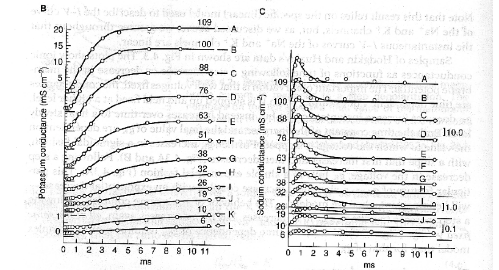

12 Bioelectricity
This lecture is based on (Keener and Sneyd 2009, vol. 8/I, chap. 4)
Bioelectricity explores electrical phenomena within biological systems, primarily focusing on how cells and organs generate, transmit, and utilize electrical signals. Key examples of bioelectric organs include the brain, heart, and muscles, all of which rely on electrical activity to function effectively. This electrical signaling governs processes as varied as neural communication, heartbeat regulation, and muscle contraction.
In biological systems, electricity arises from the movement of ions, charged atoms or molecules such as sodium \(\ce{Na+}\), potassium \(\ce{K+}\), and calcium \(\ce{Ca^2+}\), across cell membranes. Each cell is structured with distinct intracellular (inside) and extracellular (outside) spaces, divided by a cell membrane. This membrane selectively controls ion flow, establishing a difference in ion concentration between the interior and exterior of the cell. This ionic imbalance creates an electric potential across the membrane, known as the transmembrane potential, defined as: \[ V_m := \phi_i - \phi_e, \]
where \(\phi_i\) represents the intracellular potential and \(\phi_e\) the extracellular potential.
A subset of cells, known as excitable cells, including neurons, cardiac cells, and muscle cells, can rapidly alter their transmembrane potential in response to stimuli. This shift, called an action potential, enables fast communication within and between cells and is fundamental to processes like nerve impulses and heartbeats.
The groundbreaking model of cellular excitability was developed by Hodgkin and Huxley in the 1950s, providing a mathematical framework to describe the ionic mechanisms underlying action potentials in neurons and inspiring later advances in bioelectrical research.
Hodgkin and Huxley conducted a series of seminal experiments on the giant axon of the squid (distinct from the axon of the giant squid!). This giant axon, unusually large in diameter, allowed for precise experimental manipulation and measurement, making it an ideal model for studying the mechanisms of action potential generation. In their experiments, Hodgkin and Huxley modeled the axon as a long, cylindrical structure through which ions flow, enabling them to develop a quantitative model of how nerve impulses propagate. By systematically analyzing ionic currents across the axonal membrane, they identified key variables influencing excitability, including the roles of sodium and potassium ions and the voltage-gated ion channels that control their movement. Their work ultimately led to the formulation of the Hodgkin-Huxley model, a mathematical framework that describes the dynamics of action potentials and remains foundational in neurobiology.
12.1 The membrane as a leaky capacitor
In cellular bioelectricity, the cell membrane can be understood as a leaky capacitor. A capacitor typically stores electrical charge, and in a similar way, the cell membrane can maintain a separation of charges between the intracellular and extracellular environments. However, unlike an ideal capacitor, the cell membrane isn’t completely insulating-it allows certain ions to “leak” across through ion channels. This controlled leakage plays a crucial role in setting the cell’s resting membrane potential and modulating electrical signals.
The capacitance is the measure of how much charge \(Q\) we need to move from one side to another of a conductor in order to have a potential differene \(V_m\): \[ C := \frac{Q}{V_m}. \]
The unit of measure is the Farad (symbol [F]). In other words, the membrane stores a potential energy in a fully reversible manner. The capacitance is essentially a geometrical measure. For a membrane, we can use the formula: \[ C = \frac{\varepsilon\varepsilon_0 A}{d}, \]
where \(d\approx 2.3\,\text{nm}\) is the thickness of the membrane, \(\varepsilon_0 \approx 8.85\cdot 10^{-12}\,\text{F}\text{m}^{-1}\) is the vacuum permittivity, \(\varepsilon \approx 2.1\) is the dielectric constant of a lipidic chain, and \(A\) is the area. For a cell, the area may vary significantly, so it is more convenient to work per unit area. The specific membrane capacitance is \[ C_m = \frac{C}{A}. \]
For a typical cell, \(C_m \approx 1\,\text{$\mu$F}/\text{cm}^2\).
The membrane has also ion channels, allowing for current flows. Therefore, the membrane has a specific resistance \(R_m\) (resistance per unit area), whose value highly depends on the density of channels and their state (open or close).
Overall, the membrane can be approximated with an \(RC\) circuit, where the total transmembrane current is the sum of the current through the channels \(I_R\) and the capacitor \(I_C\): \[ I_\text{tot} = I_C + I_R. \]
For the capacitor, as we move charges, we have that: \[ \frac{\mathrm{d}V_m}{\mathrm{d}t} = \frac{I_C}{C_m}, \]
while for the resistance, we can use Ohm’s law: \[ I_R = \frac{V_m}{R_m}. \]
Assuming an isolated membrane, we have \(I_\text{tot}=0\) so: \[ C_m \frac{\mathrm{d}V_m}{\mathrm{d}t} + \frac{V_m}{R_m} = 0. \]
The equilibrium of the ODE is \(V_m = 0\) that is, no potential difference between the ends of the membrane. With an initial potential of \(V_m(0)=V_0\), the initial value problem reads: \[ \left\{\begin{aligned} \frac{\mathrm{d}V_m}{\mathrm{d}t} + \frac{V_m}{R_m C_m} = 0, \\ V_m(0) = V_0, \end{aligned}\right. \]
where the solution is: \[ V_m(t) = V_0 e^{-t/\tau}, \tag{12.1}\]
where \(\tau = R_m C_m\) is the membrane time constant. The constant \(\tau\) measures how quickly the membrane charges up (or discharges): when \(t=\tau\), \(V(\tau) = V_0 e^{-1} \approx 0.37 V_0\). There is a lot of variability from cell to cell: usually from \(1\,\text{$\mu$s}\) to \(1\,\text{s}\). Since \(C_m\) is mostly constant across cells (it is always the same material), it is \(R_m\) to vary a lot. Therefore, ion channels density and their state is highly variable.
12.2 Membrane response to current stimulus
When injecting a transmembrane current, we have the following model: \[ C_m \frac{\mathrm{d}V_m}{\mathrm{d}t} + \frac{V_m}{R_m} = I_s(t), \]
where \(I_s(t)\) is a stimulation current. The general solution is: \[ V_m(t) = V_0 e^{-t/\tau} + \frac{1}{C_m} \int_0^t e^{(-t-s)/\tau} I(s)\,\mathrm{d}s. \]
Suppose that \(I_s(t)\) is zero for \(t\le 0\), and equal to \(I\) for \(t>0\). Assuming \(V_m(0)=0\), the solution is: \[ V_m(t) = \left\{ \begin{aligned} & 0, && t \le 0, \\ & R_m I (1 - e^{-t/\tau}), && t > 0. \end{aligned}\right. \]
Therefore, the system tends to the equilibrium \(R_m I\).
An important example is when we have a square pulse, that is we switch off the current after some time \(T\). When we switch off the current, the solution is just Equation 12.1. Therefore we have: \[ V_m(t) = \left\{ \begin{aligned} & 0, && t \le 0, \\ & R_m I (1 - e^{-t/\tau}), && 0 < t \le T, \\ & R_m I (e^{-T/\tau} - 1)e^{-t/\tau}, && t > T. \end{aligned}\right. \]
The peak value is \(R_m I (1 - e^{-T/\tau})\). Notice that this type of cell cannot be excitable, because the peak value is fully determined by the current. There must be another mechanism for triggering the action potential.
12.3 Ion channels
The main mechanism is based on the gating dynamics of ion channels. We have the following observations:
Ion channels are very specific, in the sense that they allow the passage of a specific ion: there are sodium channels, potassium channels, and so on.
The current through a channel cannot directly follow the Ohm’s law, because even in absence of an electric field across the membrane, we can have a flow of ions (and thus, a current), simply because of difference of concentration. In fact, Hodgkin and Huxley observed that sodium concentration is higher outside while potassium concentration is higher inside (see Table 12.1).
Ion channels can change their condunctance over time, in response to voltage (voltage-gated ion channels). Since the cell can have several channels per unit area, the overall current for a specific ion varies because some channels are closed and other are open.
For point 1., we deduce the following model: \[ C_m \frac{\mathrm{d}V_m}{\mathrm{d}t} + I_\text{Na}(V_m,t) + I_\text{K}(V_m,t) + I_\text{leak}(V_m,t) = I_s(t), \tag{12.2}\]
where the currents \(I_\text{Na}\), \(I_\text{K}\), and \(I_\text{leak}\) are respectively for sodium ions \(\ce{Na+}\), potassium \(\ce{K+}\), and minor ions like chloride \(\ce{Cl}^-\). Now we need to characterize the form of each current.
12.3.1 Nernst potential
The functional form of each ion results from the Nernst equation. In fact, in view of point 2., the flow of ions through a channel is determined by a balance of diffusion and electric field. At equilibrium, the total flow is zero, hence: \[ 0 = J_\text{el} + J_\text{diff}. \]
Assuming a 1-D channel of length \(L\), with \(x\) in the longitudinal direction (\(x=0\) is the intracellular side of the membrane, \(x=L\) is the extracellular one), we model the concentration of an ion along the channel with \(c(x)\), and the electric potential with \(\phi(x)\). For the diffusion flux we have the Fick’s law: \[ J_\text{diff} = - D \frac{\mathrm{d}c}{\mathrm{d}x}, \]
where \(D>0\) is the diffusion coefficient, whereas for the electric flux we have (see Section 12.5.4): \[ J_\text{E} = c \operatorname{sign}(z) u E, \]
where \(z\) is the valence of the ion (\(z=+1\) for sodium and potassium, \(z=+2\) for calcium, \(z=-1\) for chloride), \(u\) is the electrical mobility, and \(E=E(x)\) is the electric field. At equilibrium, the sum of the two fluxes should be zero: \[ J_\text{diff} + J_\text{E} = - D \frac{\mathrm{d}c}{\mathrm{d}x} - c \operatorname{sign}(z) u \frac{\mathrm{d}\phi}{\mathrm{d}x} = 0. \]
where we introduced the electric potential \(\phi(x)\), so that \(E = - \phi'\).
Using the Einstein-Smoluchowski relationship Section 12.5.5, that is \(u = \frac{|z| q_E}{k_B T} D\), we have that: \[ J_E = - c \operatorname{sign}(z) u \frac{\mathrm{d}\phi}{\mathrm{d}x} = - D c \operatorname{sign}(z) \frac{|z| q_E}{k_B T} \frac{\mathrm{d}\phi}{\mathrm{d}x} = - D c \frac{Fz}{RT} \frac{\mathrm{d}\phi}{\mathrm{d}x}, \]
where we introduced the constant of gases \(R = N_A k_B \approx 8.314\,\text{J}\text{K}^{-1}\text{mol}^{-1}\) and the Farad constant \(F = N_A q_E\). Now the equation reads: \[ J_\text{diff} + J_\text{E} = - D \Bigl( \frac{\mathrm{d}c}{\mathrm{d}x} + c \frac{Fz}{RT} \frac{\mathrm{d}\phi}{\mathrm{d}x} \Bigr) = 0. \]
We can now solve the equation. We have that: \[ \frac{\mathrm{d}c}{c} = -\frac{Fz}{RT} \mathrm{d}\phi \]
We want to improve the following boundary conditions: \[ \begin{aligned} \phi(0)&=\phi_i, & c(0)&=c_i, \\ \phi(L)&=\phi_e, & c(L)&=c_e. \end{aligned} \]
Therefore we have: \[ \int_{c_i}^{c_e} \frac{\mathrm{d}c}{c} = -\frac{Fz}{RT} \int_{\phi_i}^{\phi_e} \mathrm{d}\phi. \]
After integration, we get \[ \ln \frac{c_e}{c_i} = -\frac{Fz}{RT} (\phi_e - \phi_i). \]
Solving for Nernst equilibrium \(V_\text{eq} = \phi_i - \phi_e\), we have: \[ V_\text{eq} = \frac{RT}{Fz} \ln \frac{c_e}{c_i}. \]
Wrapping up, given a concentration difference, the Nernst equilibrium tells up the potential difference that we need to maintain so that there is no flux (and so no current) through the channel. This potential is clearly zero when \(c_i = c_e\). For example, the Nernst potential \(V_\text{K}\) of potassium is: \[ V_\text{K} = \frac{RT}{zF} \ln \frac{\ce{[K+]_e}}{\ce{[K+]_i}}. \]
With \(\ce{[K+]_e} = 4\,\text{mM}\), \(\ce{[K+]_i} = 155\,\text{mM}\), \(R = 8.314\,\text{J}\text{K}^{-1}\text{M}^{-1}\), \(z=1\), \(F = 9.65\cdot 10^4\,\text{C}\,\text{mol}^{-1}\) we obtain \(V_\text{K} \approx -98\,\text{mV}\). In Table 12.1 we report the Nernst potential for some ions in the axon.
| Ion | Extracellular | Intracellular | Nernst potential |
|---|---|---|---|
| \(\ce{Na+}\) | 437 mM | 50 mM | \(56.1\,\text{mV}\) |
| \(\ce{K+}\) | 20 mM | 397 mM | \(-77.7\,\text{mV}\) |
| \(\ce{Cl-}\) | 556 mM | 40 mM | \(68.1\,\text{mV}\) |
12.3.2 Current-voltage relations
Deviations in potential from the Nernst equilibrium yield a current. The simplest form is a linear one. For an ion \(S\), we have: \[ I_S = g_S (V - V_S), \]
where \(g_S\) is the conductance. This relatiohship was introduced by Hodgkin and Huxley as a generalization of the Ohm’s law. Note that the current is zero for \(V = V_S\), as expected by the Nernst potential.
A more general current-voltage relation is given by the Goldman-Hodgkin-Katz (GHK) formula: \[ I_S = P_S \frac{z^2 F^2}{RT} V \frac{\ce{[S]_i}-\ce{[S]_e}e^{-\frac{VFz}{RT}}}{1 - e^{-\frac{VFz}{RT}}}. \]
The GHK current-voltage curve is non-linear, and corresponds to the generalized Ohm’s law only for \(V=V_S\), where they are both zero. The parameter \(P_S\) can be selected so that \(I_S\) for \(V=0\) is exactly \(-g_S V_S\), as predicted by the Ohm’s law.
The GHK formula is based again on the balance of fluxes, but away from equilibrium: \[ J_\text{diff} + J_\text{E} = - D \Bigl( \frac{\mathrm{d}c}{\mathrm{d}x} + c \frac{Fz}{RT} \frac{\mathrm{d}\phi}{\mathrm{d}x} \Bigr) = J_\text{tot} \neq 0, \]
where \(J_\text{tot}\) is a constant. We also assume, consistently with boundary conditions, that \(\phi(x) = \phi_i + (\phi_e - \phi_i)x/L\), so \(\phi' = (\phi_e - \phi_i)/L = -V/L\). We have the differential equation for \(c(x)\): \[ - D \Bigl( \frac{\mathrm{d}c}{\mathrm{d}x} - c \frac{FzV}{RTL} \Bigr) = J_\text{tot}, \]
for \(x\in(0,L)\) and with boundary conditions \(c(0)=c_i\), \(c(L)=c_e\). We can rewrite the equation as: \[ \frac{\mathrm{d}c}{\mathrm{d}x} = \frac{FzV}{RTL} \Bigl( c - \frac{J_\text{tot}RTL}{DFzV} \Bigr) = 0. \]
The ODE is linear and easy to integrate: \[ c(x) = c_i e^{\frac{VFz}{RTL}x} + \frac{J_\text{tot}RTL}{DFzV} \bigl(1 - e^{\frac{VFz}{RTL}x} \bigr). \]
Now, we know that \(c(L)=c_e\). So, we can impose the condition and solve for \(J_\text{tot}\): \[ J_\text{tot} = \frac{DFz}{LRT}V\frac{c_i - c_e e^{-\frac{VFz}{RT}}}{1-e^{-\frac{VFz}{RT}}} \]
Remember that \(J_\text{tot}\) is the flux of molecules, not charge. To get the current density \(I_S\) (current per unit area), we multiply by \(z F\), the total charge per mole of ions, to obtain \[ I_S = zF J_\text{tot} = \frac{D}{L} \frac{F^2 z^2}{RT}V\frac{c_i - c_e e^{-\frac{VFz}{RT}}}{1-e^{-\frac{VFz}{RT}}}, \]
which corresponds to the above relation with \(P_S = D/L\).
12.3.3 Reversal potential
Using the generalized Ohm’s law in Equation 12.2 we have: \[ C_m \frac{\mathrm{d}V_m}{\mathrm{d}t} + g_\text{Na}(V-V_\text{Na}) + g_\text{K}(V-V_\text{K}) + g_\text{leak}(V-V_\text{leak}) = 0. \]
The reversal potential is the potential \(V\) such that the total ionic current is zero. In other words, it is the equilibrium value for the ODE. In this case we have that: \[ C_m \frac{\mathrm{d}V_m}{\mathrm{d}t} = (g_\text{Na}+g_\text{K}+g_\text{leak})\Bigl( V- \frac{g_\text{Na}V_\text{Na}+g_\text{K}V_\text{K}+g_\text{leak}V_\text{leak}}{g_\text{Na}+g_\text{K}+g_\text{leak}} \Bigr) \]
so the reversal potential is: \[ V_r = \frac{g_\text{Na}V_\text{Na}+g_\text{K}V_\text{K}+g_\text{leak}V_\text{leak}}{g_\text{Na}+g_\text{K}+g_\text{leak}}, \]
and the membrane time constant is: \[ \tau = \frac{C_m}{g_\text{Na}+g_\text{K}+g_\text{leak}}. \]
12.3.4 Gating mechanism
The last point to address concerns the fact that the conductances of the channels may change over time: \[ I_S = g_S(t)(V - V_S). \]
Hodgkin and Huxley deduced the time course of \(g_S(t)\) for sodium and potassium thanks to a couple of techniques:
voltage clamping, a method they invented to hold the potential \(V\) to a given value. In this way, they could measure the total ionic current over time;
by rendering inactive the sodium channels in a separate set of measures, so that they could deduce from the total current the individual potassium and sodium currents.
From the currents, they obtained the variation over time of the conductances \(g_\text{Na}\) and \(g_\text{K}\) for different values of \(V\).

In the Figure, we see the conductance curves fitted to experimental data, at various levels of potential (with respect to the resting value). We see that the potassium current always increases, with a sigmoidal shape, and with a limit value for large times that increases as well with the potential. For the sodium, the conductance has a peak value and then goes to some lower limit value.
Hodgkin and Huxley speculated that ion channels could be in at least two states: open and close; the observed conductance is the sum of all open channels: \[ g_S(t) = \bar{g}_S \cdot p(t), \]
where \(\bar{g}_S\) is the maximum conductance per unit area of all \(S\)-channels, and \(p(t)\) is the probability that any \(S\)-channel is open.
The simplest model for \(p(t)\) is a 2-state Markov model. Suppose that \(Q(t)\in\{\mathcal{C},\mathcal{O}\}\) is the state of the channel at time \(t\), then: \[ p(t) = \mathbb{P}[Q(t) = \mathcal{O}]. \]
The Markov model is as follows: \[ \ce{$\mathcal{C}$ <=>[$\alpha$][$\beta$] $\mathcal{O}$}, \]
where \(\alpha\) and \(\beta\) are the transition rates. The corresponding equation for \(p(t)\) is: \[ \frac{\mathrm{d}p}{\mathrm{d}t} = \alpha (1-p) - \beta p. \tag{12.3}\]
Note that we can interpret \(p(t)\) as the “concentration” of open channels, thus we can formally apply the laws of chemical reactions.
The ODE in Equation 12.3 is linear and can be rewritten as: \[ p' = -(\alpha+\beta)\Bigl( p - \frac{\alpha}{\alpha+\beta} \Bigr) = -\frac{1}{\tau_p}( p - p_\infty ), \]
where we introduced the characteristic time \(\tau_p\) and and the limit value \(p_\infty\), that is \(p\to p_\infty\) for \(t\to\infty\). The general solution is: \[ p(t) = p_\infty - e^{-t/\tau_p}(p_\infty - p(0)). \]
This function captures the time transient of the conductance, but without the correct shape. For instnace, in order to have a sigmoidal shape for the potassium current we need to allow for multiple states: for the potassium, the model is as follows:
![]()
where the state \(\ce{I_4}\) is open, that is \(p(t) = \mathbb{P}[Q(t)=\ce{I_4}]\). We can imagine the potassium channel as made of 4 identical units, each possibly being in either open or closed state. The channel is open when all the 4 units are open. Then, \(\ce{I}_k\) represents the state with \(k\) open units. The rates of transition are the same for all units: if the rate of single unit from closed to open is \(\alpha\), then the rate from \(\ce{I_0}\) to \(\ce{I_1}\) is exactly \(4\alpha\), because we have 4 closed units that could become open. A similar argument applies to the other rates.
It is possible to derive a full set of ODEs for this Markov model, but we can anticipate that, if \(n(t)\) is the probability that a single unit is open, then \(p(t) = n^4(t)\). The equation for \(n(t)\) is just \[ \frac{\mathrm{d}n}{\mathrm{d}t} = \alpha_n (1-n) - \beta_n n. \]
For the sodium channel, the mechanism is a bit more complicated:
![]()
Here we have a Markov model with 8 possible states, and we have \(p(t)=m^3(t)h(t)\) where \(m(t)\) and \(h(t)\) satisfies: \[ \begin{aligned} \frac{\mathrm{d}m}{\mathrm{d}t} &= \alpha_m (1-m) - \beta_m m, \\ \frac{\mathrm{d}h}{\mathrm{d}t} &= \alpha_h (1-h) - \beta_h h. \end{aligned} \]
In this way, the time course of the conductances can be fully characterized.
The very last ingredient is the voltage sensitivity of the conductances. Here, Hodgkin and Huxley assumed that all the rates for \(m\), \(h\), and \(n\), are explicit functions of \(V\), fitted to the data.
First note that \[ \mathbb{P}[S(t) = \mathcal{C}] = 1 - \mathbb{P}[S(t) = \mathcal{C}] = 1-p(t). \]
The probability \(p(t+\mathrm{d}t)\) writes as follows: \[ \begin{split} p(t+\mathrm{d}t) &= \mathbb{P}[S(t+\mathrm{d}t) = \mathcal{O}] \\ &= \mathbb{P}[S(t+\mathrm{d}t) = \mathcal{O} | S(t) = \mathcal{C}] \mathbb{P}[S(t) = \mathcal{C}] \\ &\quad{} + \mathbb{P}[S(t+\mathrm{d}t) = \mathcal{O} | S(t) = \mathcal{O}] \mathbb{P}[S(t) = \mathcal{O}] \\ &= \mathbb{P}[S(t+\mathrm{d}t) = \mathcal{O} | S(t) = \mathcal{C}]) (1-p(t)) \\ &\quad{} + (1-\mathbb{P}[S(t+\mathrm{d}t) = \mathcal{C} | S(t) = \mathcal{O}]) p(t) \\ &= \alpha \mathrm{d}t (1-p(t)) + p(t) - \beta\mathrm{d}t p(t). \end{split} \]
where we used the rates: \[ \begin{aligned} \mathbb{P}[S(t+\mathrm{d}t) = \mathcal{C} | S(t) = \mathcal{O}] &= \alpha\mathrm{d}t \\ \mathbb{P}[S(t+\mathrm{d}t) = \mathcal{O} | S(t) = \mathcal{C}] &= \beta\mathrm{d}t \end{aligned} \]
Rearranging the terms we have: \[ \frac{p(t+\mathrm{d}t)-p(t)}{\mathrm{d}t} = \alpha(1-p) - \beta p. \]
12.4 The Hodgkin-Huxley model
Putting all the ingredients together, we arrive that the final form of the Hodgkin-Huxley model for the excitability of the axon: \[ \left\{ \begin{aligned} & C_\mathrm{m} \frac{\mathrm{d}V_\mathrm{m}}{\mathrm{d}t} + \bar{g}_\text{Na} m^3 h (V - V_\text{Na}) + \bar{g}_\text{K} n^4 (V - V_\text{K})+ \bar{g}_\text{leak} (V - V_\text{leak}) = I_\mathrm{stim}(t), \\ & \frac{\mathrm{d}n}{\mathrm{d}t} = \alpha_n (1-n) - \beta_n n, \\ & \frac{\mathrm{d}m}{\mathrm{d}t} = \alpha_m (1-m) - \beta_m m, \\ & \frac{\mathrm{d}h}{\mathrm{d}t} = \alpha_h (1-h) - \beta_h h. \end{aligned}\right. \]
The model, supplemented with initial conditions for the variables \(V_m(t)\), \(m(t)\), \(h(t)\), and \(n(t)\), can quantitatively reproduce the action potential of the squid axon.
12.5 Appendix: Electrochemistry
We review here some basic concepts of electrochemistry.
12.5.1 Conductivity
Consider a volume (a cube, for instance) with some ions inside, for instance, a volume of water with salt inside, which dissociated into sodium \(\ce{Na+}\) and chloride \(\ce{Cl-}\).
If we apply a uniform electric field \(E\) across two sides of the cube, with two electrodes of area \(A\), cations (positive ions) will move towards the cathode (negative electrode) and anions (negative ions) will move towards the anode (positive electrode.) This movement of ions will close the circuit and give rise to a current \(I\).
The current is proportional to the area \(A\) of the electrodes, so we define the current density \(J\) as follows: \[ J = \frac{I}{A}. \]
Experimentally, we observe that the current is proportional to the potential difference \(V\) between the electrode: \[ I = g V, \]
where \(g\) is the conductance of the solution (unit: Siemens [S]), that is the inverse of the resistance. Overall, the conductance may depend on several factors:
- the concentration of ions (more ions, more current),
- the mobility of ions in the solution (faster ions, more current),
- the distance between the electrodes,
- the viscosity of the solution (similar to mobility),
- the temperature,
- …
In first approximation, we can take \(E = \frac{V}{d}\), where \(d\) is the distance between the electrodes. We end up with: \[ J = \frac{g d}{A} E = \sigma E, \]
where \(\sigma\) is the conductivity. The conductivity is an intrisic property of the solution. For instance, sea water has \(\sigma \approx 50 \text{mS}/\text{cm}\), and for the body is \(\sigma \approx 1.5 \text{mS}/\text{cm}\).
12.5.2 Molar conductivity
The conductivity \(\sigma\), in turn, depends on the concentration of ions. The conductivity per unit mole is the molar conductivity \(\Lambda_m = \frac{\sigma}{c}\). In first approximation, we assume that \(\Lambda_m\) is independent of \(c\).
The molar conductivity of a solution with multiple ions involved is given by the Kohlrausch law of independent migration of ions: \[ \Lambda_m = \sum |z_i| \lambda_m \]
where \(z_i\) is the valence of the \(i\)-th ion and \(\lambda_i\) its molar conductivity. For instance, \(\lambda_\text{Na} = 5\,\text{mS}\,\text{m}^2/\text{mol}\) and \(\lambda_\text{Cl} = 7.6\,\text{mS}\,\text{m}^2/\text{mol}\). So, the molar conductivity of salt \(\ce{NaCl}\) in water is \(\Lambda_{NaCl} = 12.6\,\text{mS}\,\text{m}^2/\text{mol}\).
12.5.3 Mobility of ions
In a solution, each ion will experience an electric force according to the Coulomb’s law: \[ f_E = q_E z E, \]
where \(q_E \approx 1.602\cdot 10^{−19}\,\text{C}\) is the elementary charge, \(z\) is the valence, and \(E\) the electric field. On the other hand, the ion will also experience a viscous friction, due to the molecules of the solution. The balance of forces gives the dynamics: \[ m \dot{v} = q_E z E - f v, \]
where \(m\) is the mass, \(v\) is the velocity, and \(f\) is the friction. At equilibrium, the limit velocity \(v_\infty\) is \[ v_\infty = \frac{z q_E}{f} E = u E, \]
where \(u = \frac{z q_E}{f}\) is the electrical mobility. More generally, when \(z<0\) also the friction should be negative, so: \[ u = \frac{|z|e_E}{f}. \]
Again, the mobility is an intrisic property of the solution. Specifically, we can consider the Stokes law for the friction, \(f=6\pi a \eta\) where \(a\) is the radius of the ion and \(\eta\) is the viscosity of the solution. Therefore, \[ u = \frac{z q_E}{6\pi a \eta}. \]
For instance, \(\ce{Na+}\) mobility in water at \(25^{\circ}\text{C}\) is \(5.19\cdot 10^{-8}\,\text{m}^2/(\text{s}\,\text{V})\). (Clearly, the viscosity depends on the temperature.)
12.5.4 Mobility and conductivity
There is a relationship between mobility and conductivity, because moving ions yields a current. Assuming \(v_\infty = uE\) as the speed of ions, in the time \(\mathrm{d}t\) the ions cover a distance of \(\mathrm{d}x = v_\infty \mathrm{d}t\). The total volume of ions that moves across an area \(A\) is \[ A\cdot \mathrm{d}x\cdot c\cdot N_A = A u E c N_A \mathrm{d}t, \]
where \(N_A \approx 6.022\cdot 10^{23}\,\text{mol}^{-1}\) is the Avogadro constant. The total charge is the above quantity multiplied by \(|z| q_E\). Hence, the current density is: \[ J = \frac{|z| q_E A u E c N_A \mathrm{d}t}{A \mathrm{d}t} = F c u |z| \cdot E = \sigma E, \]
with \(F = q_E N_A \approx 9.65\cdot 10^4\,\text{C}\,\text{mol}^{-1}\) is the Farad constant. So we arrive at the expression: \[ \sigma = F c u |z|, \quad\Rightarrow\quad \Lambda_m = \frac{\sigma}{c} = F|z| u. \]
Note that we take the absolute value \(|z|\) because we should separate cations (+) and anions (-) in the analysis. Cations will follow the direction of \(E\), while anions go in the opposite direction. Since the latters carry an negative charge, the virtually move a positive charge in the direction of \(E\).
Given the total current as \(J = F|z|uc E\), we can go back to the flux of ions \(J_E\) (as a change of concentration) to obtain the Planck’s equation: \[ J_E = \frac{J}{Fz} = \frac{F|z|uc}{Fz} E = u c \operatorname{sign}(z) E. \]
12.5.5 Einstein-Smoluchowski equation
The connection between friction and diffusion has been provided by Einstein in 1905 and independently by others around the same period (Sutherland in 1904, Smoluchowski in 1906), in a seminal work on Brownian motion. Briefly, friction dissipates kinetic energy into heat, whereas Brownian motion-the rapid fluctuation of molecules at microscopic scale due to termal agitation-converts heats into kinetic energy. The duality between friction and Brownian motion translates into the general relationship \[ D = \frac{k_B T}{f} \]
where \(k_B\) is the Boltzmann constant, \(D\) is the diffusion coefficient and \(T\) is the absolute temperature. Given the definition of electrical mobility, we have that: \[ D = \frac{k_B T}{f} = \frac{k_B T}{|z| q_E} u, \]
which provides a link between \(D\) and \(u\).